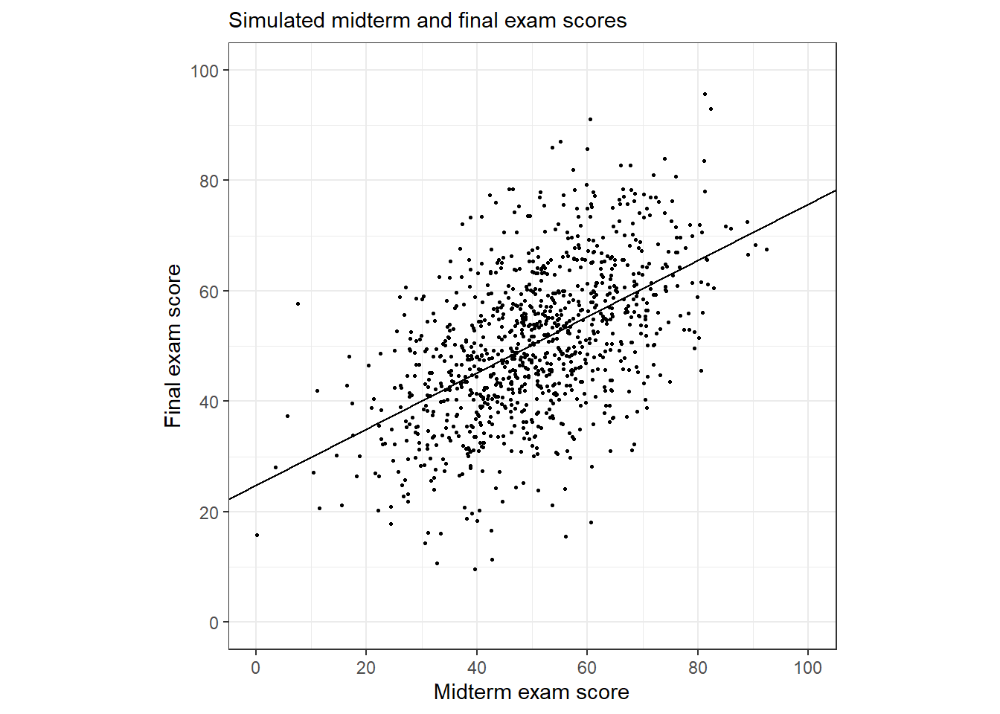

Chapter 9 Prediction and Bayesian inference
베이지언 추론은 전통적인 추정법에서 다루지 않는 세 단계를 더 다루고 있다.
데이터와 모델은 모델의 파라미터들에 대한 일련의 시뮬레이션으로 요약하는 사후분포(posterior distribution)를 구성하기 위해 결합된다.
이 사후분포를 가지고 추정량에 대한 불확실성을 확인할 수 있다.
- 모델 파라미터의 불확실성을 설명하는 관측되지 않은, 또는 앞으로의 결과에 대한 시뮬레이션에 기초한 예측들을 얻을 수 있다.
- 사전분포를 사용해 모델에 추가적인 정보를 포함할 수 있다.
9.1 Propagating uncertainty in inference using posterior simulations
일단은 베이지언 시뮬레이션이 추론과 예측에 있어서의 불확실성을 표현하는 하나의 방법이라고만 이해를 하자. 예를 들어, 챕터 7에서 선거와 경제 간의 관계를 살펴보았던 예제를 다시 살펴보자.
M9.1 <- stan_glm(vote ~ growth, data = hibbs, refresh = 0)
M9.1 %>% print()## stan_glm
## family: gaussian [identity]
## formula: vote ~ growth
## observations: 16
## predictors: 2
## ------
## Median MAD_SD
## (Intercept) 46.3 1.7
## growth 3.0 0.7
##
## Auxiliary parameter(s):
## Median MAD_SD
## sigma 3.9 0.8
##
## ------
## * For help interpreting the printed output see ?print.stanreg
## * For info on the priors used see ?prior_summary.stanreg이 숫자들은 각각 절편/기울기/잔차의 표준편차를 나타내는 파라미터 벡터 \((a, b, \sigma)\)의 서로 다른 가능한 값들을 나타내는 시뮬레이션의 행렬을 요약한 것이다. 그 결과, 단 하나의 점추정값을 제시하기보다는 모수에 대한 불확실성을 반영한 사후시뮬레이션 결과들을 갖게 된다.
아래 sims가 시뮬레이션된 결과들을 행렬로 저장한 내용이며, 우린 이 행렬로부터 필요한 통계량을 추출할 수 있다.
sims <- as.matrix(M9.1) # Simulation results
Median <- apply(sims, 2, median)
MAD_SD <- apply(sims, 2, mad)
print(cbind(Median, MAD_SD))## Median MAD_SD
## (Intercept) 46.252913 1.7292656
## growth 3.040811 0.7275287
## sigma 3.936428 0.7714837편의상 사후 중앙값 표준편차를 표준오차라고 부르기도 한다(엄밀하게 두 개념은 다른 것이다).
9.1.1 Uncertainty in the regression coefficients and implied uncertainty in the regression line
불확실성 분포에 대한 베이지언의 개념을 이해하기 위해서는 계수값의 시뮬레이션 추출을 그래프로 나타내는 것이 도움이 될 수 있다. Figure 9.1은 선거를 예측하는 모델 적합 결과에 대한 절편과 기울기의 사후 시뮬레이션 값의 히스토그램을 보여준다.

Figure 9.1: Posterior simulations of \(a\) and \(b\) from the regression model, \(y = a + bx + \text{error}\). For each parameter, we display the simulation draws produced by stan_glm and also the posterior median \(\pm 1\) and \(2\) mad sd’s.
Figure 9.2a는 사후분포를 보여주는 산포도이다. Figure 9.2b는 \((a, b)\) 점들을 잇는 선 100개를 보여준다. 이 그래프는 적합된 회귀모델에 있어서 추론의 불확실성을 보여준다. 표본의 규모가 커질수록 계수값의 표준오차는 감소하며, Figure 9.2b는 하나의 선으로 수렴하게 될 것이다.
9.1.2 Using the matrix of posterior simulations to express uncertainty about a parameter estimate or function of parameter estimates
시뮬레이션을 통해 추론을 요약하여 제시하는 것의 실질적인 장점은 바로 직접적으로 추론을 이끌어내기 위해 시뮬레이션한 값들을 사용할 수 있다는 것에 있다.
a <- sims[,1] %>% as.matrix()
b <- sims[,2] %>% as.matrix()
z <- a/b
print(c(median(z), mad(z)))## [1] 15.177925 4.0140959.2 Prediction and uncertainty: predict, posterior_linpred, and posterior_predict
\(y = a + bx + \text{error}\)라는 회귀모델을 적합한 이후에, 우리는 적합 결과를 새로운 데이터, 예측변수 \(x^{\text{new}}\)로 예측하는 데 사용할 수 있다.
점예측치(\(\hat a + \hat b x^{\text{new}}\))
적합된 모델에 기초하여 새로운 \(x\)의 값에 대한 \(y\)의 평균 값을 가장 잘 추정하는 점추정치.
\(\hat a\)와 \(\hat b\)는 불확실성을 반영하지 않은 점예측값이다.
불확실성을 포함한 선형예측변수(\(a + b x^{\text{new}}\))
\((a, b)\)에 대한 추론의 불확실성을 나타낸다.
새로운 예측변수 \(x^{\text{new}}\)에 대한 \(y\)의 기대값 또는 평균값의 불확실성의 분포를 제시한다.
새로운 관측값에 대한 예측 분포(\(a + b x^{\text{new}} + \text{error}\))
- \(x^{\text{new}}\)라는 새로운 예측변수와 새로운 관측치 \(y\)에 대한 불확실성을 보여준다.
표본 규모가 커질수록(\(\rightarrow \infty\)), 계수 \(a\)와 \(b\)는 더 정확하게 추정되며, 선형 예측변수의 불확실성은 0에 수렴하게 된다. 그러나 표본 규모가 커지더라도 새로운 관측값에 대한 예측분포의 불확실성은 0에 수렴하는 것이 아니라 잔차의 표준편차, \(\sigma\)에 수렴한다.
9.2.1 Point prediction using predict
선거와 경제 데이터를 바탕으로 경제성장률 2.0%일때의 집권당의 득표율을 예측하고자 한다고 하자. 먼저 우리는 \(x\)의 가상의 값에 대한 데이터셋을 만들어야 한다.
new <- data.frame(growth = 2.0)그럼 이제 점예측값을 컴퓨팅할 수 있다.
y_point_pred <- predict(M9.1, newdata=new)
y_point_pred## 1
## 52.36415마찬가지로 직접 컴퓨팅할 수도 있다.
a_hat <- coef(M9.1)[1]
b_hat <- coef(M9.1)[2]
y_point_pred <- a_hat + b_hat*new
y_point_pred## growth
## 1 52.33453두 결과 모두 \(46.3 + 3.0 \times 2 = 52.3\)이라는 값을 반환한다.
9.2.2 Linear predictor with uncertainty using posterior_linpred or posterior_epred
posterior_linpred 함수를 이용해 적합된 회귀선의 값에 대한 불확실성을 얻을 수 있다.
# Use function
y_linpred <- posterior_linpred(M9.1, newdata=new)
y_linpred %>% head(n = 20)##
## iterations 1
## [1,] 53.28234
## [2,] 52.48851
## [3,] 51.40536
## [4,] 53.87927
## [5,] 53.33107
## [6,] 52.59851
## [7,] 52.48331
## [8,] 53.08895
## [9,] 51.61434
## [10,] 53.30091
## [11,] 51.32071
## [12,] 53.28453
## [13,] 52.69170
## [14,] 51.77340
## [15,] 52.71569
## [16,] 52.02432
## [17,] 52.69049
## [18,] 51.93764
## [19,] 52.70163
## [20,] 52.30842# Compute by hand
sims <- as.matrix(M9.1)
a <- sims[,1]
b <- sims[,2]
y_linpred <- a + b*new
y_linpred %>% head(n = 20)## growth
## 1 53.28234posterior_linpred 함수는 평균이 점예측치와 같고 표준편차는 적합된 모델의 불확실성을 보여주는 분포로부터 얻어진 사후 시뮬레이션의 벡터를 반환한다.
마찬가지로 새로운 데이터 관측치를 가지고 기대 예측값을 구하는 posterior_epred 함수를 이용할 수 있다.
9.2.3 Predictive distribution for a new observation using posterior_predict
마지막으로 어떤 한 선거에서의 예측 불확실성을 나타내는 벡터를 계산할 수 있다.
# Use function
y_pred <- posterior_predict(M9.1, newdata=new)
y_pred %>% head(n = 20)## 1
## [1,] 53.34335
## [2,] 47.02423
## [3,] 48.78543
## [4,] 53.64529
## [5,] 51.61796
## [6,] 56.55096
## [7,] 55.16892
## [8,] 53.07260
## [9,] 48.68477
## [10,] 56.08386
## [11,] 53.87223
## [12,] 53.65538
## [13,] 48.41906
## [14,] 49.75108
## [15,] 50.91417
## [16,] 50.11859
## [17,] 54.03190
## [18,] 52.44453
## [19,] 49.66674
## [20,] 48.83045# By hand
n_sims <- nrow(sims)
sigma <- sims[,3]
y_pred <- as.numeric(a + b*new) + rnorm(n_sims, 0, sigma)
y_pred %>% head(n = 20)## [1] 43.09430 58.78669 50.27444 57.70791 62.74808 54.80009 54.70959 48.98187
## [9] 51.49506 55.78395 54.79901 53.23100 51.02962 52.14421 59.38839 59.74599
## [17] 51.92007 51.10829 51.82106 47.73279이 두 결과 모두 시각적으로 요약하여 제시할 수 있다.
hist(y_pred)
또는 요약통계치를 이용하여 숫자로 보여줄 수도 있다.
y_pred_median <- median(y_pred)
y_pred_mad <- mad(y_pred)
win_prob <- mean(y_pred > 50)
# 결과는 다음과 같다.
cat("Predicted Clinton percentage of 2-party vote: ",
round(y_pred_median,1),
", with s.e. ", round(y_pred_mad, 1),
"\nPr (Clinton win) = ",
round(win_prob, 2),
sep="")## Predicted Clinton percentage of 2-party vote: 53.1, with s.e. 4
## Pr (Clinton win) = 0.789.2.4 Prediction given a range of input values
predict, posterior_linpred, posterior_predict를 이용해서 예측값의 범위를 계산할 수 있다. 예를 들어, -2%부터 +4% 사이의 경제성장률의 가능한 값의 범위에서 선거 결과를 예측하는 것 등이 가능해진다.
new_grid <- data.frame(growth=seq(-2.0, 4.0, 0.5))
y_point_pred_grid <- predict(M9.1, newdata=new_grid)
y_linpred_grid <- posterior_linpred(M9.1, newdata=new_grid)
y_pred_grid <- posterior_predict(M9.1, newdata=new_grid)결과적으로 길이가 13인 벡터, y_point_pred_grid와 경제성장률을 보여주는 13개 각 값에 대한 예측값인 \(n_sims\times 13\)인 두 행렬, y_linpred_grid와 y_pred_grid를 얻게 된다.
9.2.5 Propagating uncertainty
선거 결과의 불확실성은 경제성장에 대해 미리 설정된 여러 값들에 조건적으로 나타난다. 선거 전에 경제성장률이 2.0%였을 경우의 가장 최선의 추정량이 약간의 불확실성, 표준편차 0.3%의 정규분포로 나타난다고 해보자. 우리는 우리의 불확실성을 더 완벽하게 표현하는 미래의 분포를 얻기 위해 예측변수의 불확실성을 이용할 수 있다.
x_new <- rnorm(n_sims, 2.0, 0.3)
y_pred <- rnorm(n_sims, a + b*x_new, sigma)마찬가지로 요약해보면 다음과 같다:
cat("Predicted Clinton percentage of 2-party vote: ",
round(median(y_pred), 1),
", with s.e. ", round(mad(y_pred), 1),
"\nPr (Clinton win) = ",
round(mean(y_pred > 50), 2),
sep="")## Predicted Clinton percentage of 2-party vote: 52.3, with s.e. 4.1
## Pr (Clinton win) = 0.72점예측값은 52.3%로 변하지 않았지만 표준편차가 약간 높아져서 추가적인 불확실성을 반영하고 있는 것을 확인할 수 있다.
9.2.6 Simulating uncertainty for the linear predictor and new observations
이번에는 earnings라는 설문조사 결과를 가진 데이터로 키(인치)로 몸무게(파운드)를 예측하는 모델을 분석해보자.
fit_1 <- stan_glm(weight ~ height,
data=earnings, refresh = 0)
print(fit_1)## stan_glm
## family: gaussian [identity]
## formula: weight ~ height
## observations: 1789
## predictors: 2
## ------
## Median MAD_SD
## (Intercept) -173.7 11.8
## height 5.0 0.2
##
## Auxiliary parameter(s):
## Median MAD_SD
## sigma 29.0 0.5
##
## ------
## * For help interpreting the printed output see ?print.stanreg
## * For info on the priors used see ?prior_summary.stanreg절편은 해석이 어렵다. 키가 0인치일 때의 예측되는 몸무게를 의미하기 때문이다. 현실적으로 존재하지 않는 상황이기는 하다. 따라서 다음과 같이 데이터를 좀 손을 보자.
earnings$c_height <- earnings$height - 66
fit_2 <- stan_glm(weight ~ c_height,
data=earnings, refresh = 0)
print(fit_2)## stan_glm
## family: gaussian [identity]
## formula: weight ~ c_height
## observations: 1789
## predictors: 2
## ------
## Median MAD_SD
## (Intercept) 153.4 0.7
## c_height 5.0 0.2
##
## Auxiliary parameter(s):
## Median MAD_SD
## sigma 28.9 0.5
##
## ------
## * For help interpreting the printed output see ?print.stanreg
## * For info on the priors used see ?prior_summary.stanreg위와 같이 변수를 중심화(centering)해주면, 회귀모델의 예측변수는 66인치에 비례한 키의 변화를 설명한다. 그 결과, 우리는 회귀계수에 대한 조금 더 안정적이고 해석가능한 추론을 도출할 수 있다.
기울기와 표준편차-오차에 대한 추론은 달라지지 않지만 절편값이 달라진다. 절편값은 이제 66인치인 사람에 대한 예측 몸무게에 대응하는 결과로 이해할 수 있다. 적합된 모델에서 우리는 모집단에서 66인치의 키를 가진 사람들의 평균 몸무게를 153.2ㅇ 파운드로, 0.6의 불확실성을 가졌다고 추정한다. 그러나 만약 우리가 모집단에서 무작위로 선택된 66인치의 키를 가진 사람 한 명을 특정해서 그 몸무게를 예측하고 싶다면, 29.1로 추정된 표준편차 예측 불확실성을 포함할 필요가 있다.
일반적으로 적합된 회귀모델을 새로운 데이터 관측치, \(x^{\text{new}}\)에 적용할 때, 우리는 선형 예측변수 \(a + bx^{\text{new}}\)에 대한 추론을 하게 되거나 예측값 \(y^{\text{new}} = a + bx^{\text{new}} + \epsilon\)에 대한 추론을 하게 된다.
- 예를 들어 키가 70인치인 사람의 무게를 예측한다고 하자, 이때
c_height = height - 66 = 4가 된다.
\[ \begin{aligned} \text{Linear predictor: }&a + 4.0b,\\ \text{Predicted value: }&a + 4.0b + \epsilon. \end{aligned} \]
즉, 위의 모델에서 70인치인 사람의 몸무게에 대한 점예측치는 \(153.2 +4.0 \times 4.9 = 172.8\) 파운드라고 할 수 있다.
\(y = a + bx + \text{error}\)라는 회귀모델에서 선형 예측변수 \(a + bx\)에 대한 표준편차는 다음과 같다:
\[ \hat \sigma_{\text{linpred}} = \hat \sigma \sqrt{\frac{1}{n} + \frac{(x^{\text{new}}-\bar x)^2}{\sum^{n}_{i=1}(x_i-\bar x)^2}}. \]
예측값 \(a + bx + \epsilon\)에 대한 표준편차는 다음과 같다:
\[ \hat \sigma_{\text{prediction}} = \hat \sigma \sqrt{ 1 + \frac{1}{n} + \frac{(x^{\text{new}}-\bar x)^2}{\sum^{n}_{i=1}(x_i-\bar x)^2}}. \]
복잡한 공식을 이용하기보다는 R에서 시뮬레이션을 활용해 예측 불확실성을 컵퓨팅 해볼 수 있다.
적합된 회귀모델에서 표본 규모 \(n\)의 크기가 커질수록, 선형 예측변수의 표준편차는 0으로 수렴한다. 반면에 예측값의 표준편차는 0이 아닌 \(\sigma\)의 값에 수렴한다. 적합된 모델의 파라미터들에 대해 완벽하게 알고있다고 하더라도 새로운 데이터 관측치를 예측하는 것에 대한 불확실성이 존재한다. stan_glm으로 모델을 적합한 이후에 우리는 두 가지 종류의 예측값을 posterior_linpred와 posterior_predict의 사후 시뮬레이션을 얻을 수 있다.
키와 몸무게 예제에서 베이지한 회귀모델 fit_2를 이용하여 70인치 키를 가진 사람의 몸무게를 추정해보자(키는 현재 중심화되어 4.0인치):
new <- data.frame(c_height=4.0)점예측값을 컴퓨팅할 수도 있다.
y_point_pred_2 <- predict(fit_2, newdata=new)그리고 선형 예측값의 시뮬레이션을 컴퓨팅할 수 있다.
y_linpred_2 <- posterior_linpred(fit_2, newdata=new)\(a+4.0b\)의 가능한 값들을 보여주는 벡터를 계수값의 사후 불확실성으로부터 오는 변동성과 함께 산출할 수 있다. 키가 70인치인 사람에 대한 사후 예측 시뮬레이션을 컴퓨팅해보자.
y_postpred_2 <- posterior_predict(fit_2, newdata=new)
y_postpred_2 %>% head(n = 20)## 1
## [1,] 220.7331
## [2,] 141.4236
## [3,] 158.3031
## [4,] 146.5845
## [5,] 168.6294
## [6,] 204.0088
## [7,] 122.8925
## [8,] 158.5095
## [9,] 157.5609
## [10,] 171.9010
## [11,] 205.9416
## [12,] 143.0365
## [13,] 157.4006
## [14,] 184.8260
## [15,] 160.6188
## [16,] 189.3811
## [17,] 201.7068
## [18,] 168.5236
## [19,] 239.4535
## [20,] 162.0170y_postpred_2는 \(a + 4.0b + \epsilon\)이 취할 수 있는 가능한 값들을 보여주는 시뮬레이션 벡터를 산출한다. 이 벡터의 중앙값, 중앙값 표준편차, 히스토그램 등을 요약해서 보여줄 수 있다.
9.3 Prior information and Bayesian synthesis
전통적인 통계방법은 단 하나의 데이터셋에 기초하여 요약 결과와 추론을 수행한다. 베이지언 방법은 사전정보와 획득한 데이터를 결합해 필요한 요약 자료와 추론을 제시한다.
9.3.1 Expressing data and prior information on the same scale
우리가 추정하고자 하는 연속형 파라미터, \(\theta\)의 정규분포에 대한 베이지언 추론의 공식에서부터 시작해보자. 여기서의 목적은 사전 표준오차(prior standard error, \(\text{se}_\text{prior}\))를 갖는 사전 추정량(prior estimate) \(\hat \theta_{\text{prior}}\)과 표준오차, \(\text{se}_\text{data}\)를 갖는 데이터 추정량(data estimate), \(\hat \theta_{\text{data}}\)를 결합하는 것에 있다.
그 결과로 얻을 수 있는 베이지언 추정량, \(\hat \theta_{\text{Bayes}}\)은 표준오차 \(\text{se}_\text{Bayes}\)를 갖는다:
\[ \begin{aligned} \hat \theta_{\text{Bayes}}&=\bigg(\frac{1}{\text{se}^2_{\text{prior}}}\hat \theta_{\text{prior}}+\frac{1}{\text{se}^2_{\text{data}}}\hat \theta_{\text{data}} \bigg)\bigg/\bigg(\frac{1}{\text{se}^2_{\text{prior}}} + \frac{1}{\text{se}^2_{\text{data}}} \bigg),\\ \text{se}_\text{Bayes}&=1\bigg/\sqrt{\frac{1}{\text{se}^2_{\text{prior}}} + \frac{1}{\text{se}^2_{\text{data}}}}. \end{aligned} \]
위의 공식은 베이지언 추론이 사전정보와 데이터 간의 어떠한 조정을 통해 도출된다는 것을 보여준다.
9.3.2 Bayesian information aggregation
사전 정보에 대한 값을 설정한다.
theta_hat_prior <- 0.524
se_prior <- 0.041새로운 데이터 추정량을 설정한다.
n <- 400
y <- 190
theta_hat_data <- y / n
se_data <- sqrt((y / n) * (1 - y / n) / n)사전 정보와 데이터로부터 사후분포의 값을 컴퓨팅한다.
Figure 9.3a는 사전 분포와 가능도(데이터로부터 얻은 정보)에 관한 내용을 보여준다.
![(a) Likelihood (distribution representing data estimate and standard error) and prior distribution for the example combining estimate from a poll (the data) with the forecast from a fitted model (the prior). In this case, the data estimate is 0.475 with standard error 0.025, and the prior estimate is 0.524 with prior standard error 0.041. (b) Bayesian inference yields the posterior distribution, which is a compromise between the likelihood and the prior. In this example, the data are more informative than the prior, and so the posterior distribution is closer to the likelihood than the prior distribution.](regression-ghv_files/figure-html/unnamed-chunk-148-1.png)
Figure 9.2: (a) Likelihood (distribution representing data estimate and standard error) and prior distribution for the example combining estimate from a poll (the data) with the forecast from a fitted model (the prior). In this case, the data estimate is 0.475 with standard error 0.025, and the prior estimate is 0.524 with prior standard error 0.041. (b) Bayesian inference yields the posterior distribution, which is a compromise between the likelihood and the prior. In this example, the data are more informative than the prior, and so the posterior distribution is closer to the likelihood than the prior distribution.
Figure 9.3a에 있어서 우리는 사전 정보와 데이터 추정량을 결합하면서 핵심적인 가정을 하고 있다. 바로 사전정보와 데이터가 서로 다른 정보 출처를 보여주고 있다는 가정이다.
보다 정확하게 이 가정은 두 추정량에 있어서의 불확실성이 통계적으로 독립적이라는 것을 의미한다.
이 예제에서 사전 분포는 과거 선거/현재 경제성과에 바탕을 둔 예측된 결과이며, 이때 예측의 불확실성은 적합된 모델의 0이 아닌 잔차로부터 유래한 것이다.
더불어 이 예제에서 사전 표준오차는 4.1%이며 데이터의 표준오차는 2.5%이므로 데이터는 사전 정보보다 더 많은 정보를 담고 있다. 따라서 베이즈 추정량은 데이터에 점차 더 가까워질 것이다. 쉽계 계산해볼 수 있다.
theta_hat_prior <- 0.524
se_prior <- 0.041
n <- 400
y <- 190
theta_hat_data <- y/n
se_data <- sqrt((y/n)*(1-y/n)/n)
theta_hat_bayes <- (theta_hat_prior/se_prior^2 +
theta_hat_data/se_data^2) /
(1/se_prior^2 + 1/se_data^2)
theta_hat_bayes## [1] 0.4882564se_bayes <- sqrt(1/(1/se_prior^2 + 1/se_data^2))
se_bayes## [1] 0.02132543\(\hat \theta_{\text{Bayes}} = 0.488\), \(\text{se}_{\text{Bayes}}=0.021\)을 얻을 수 있다. 이 추정량은 사전 정보와 데이터 추정량 사이에 위치하며, 데이터 추정량에 보다 가깝다. Figure 9.3b에서 시각적으로 확인할 수 있다.
- 더 불확실한 데이터를 가지고 동일한 분석을 수행한다고 해보자. 점추정량은 그대로여도 표준오차가 0.025에서 0.075로 증가한다고 할 때, 페이즈 추정량은 0.512가 되며, 사전정보에 보다 더 가까워지는 것이다.
9.3.3 Different ways of assigning prior distributions and performing Bayesian calculations
통계학에서 헥살릴 수 있는게 다른 방식으로 수행되는 비슷한 분석이다. 회귀분석 모델링에서 일반적인 예제를 보면, 실제로는 종종 계수값에 대한 거의 알지 못한다는 약한 사전정보, 또는 어떠한 강한 가정을 수립하지 않는다든지 하는 등의, 모든 계수값들에 대해 사전 정보를 특정해야만 한다(Gelman, Hill, and Vehtari 2020: 121).
9.4 Example of Bayesian inference: beauty and sex ratio
우리는 잡음(noise)-불확실성이 존재하는 연구로부터 추정량을 조정하기 위해 사전 정보를 사용할 수 있다(Gelman, Hill, and Vehtari 2020: 121). 이 예제는 Kanazawa의 연구에서 기인한 것이다. 먼저 sexratio.rda 데이터를 불어오자.
load("data/ros-master/SexRatio/data/sexratio.rda")
head(sexratio)## x y
## 1 -2 50
## 2 -1 44
## 3 0 50
## 4 1 47
## 5 2 56다섯 가지 매력점수는 x열에, 성인 중 여자아이를 가진 부모의 비율을 y열에 저장되어 있다.
9.4.1 Prior information
하지만 더 많은 정보를 사용할 수 있다. 예를 들어, 현재 미국에서 보고된 인종별 성비 등을 이용할 수도 있다. 주어진 매력점수 그 자체는 주관적인 지표이므로 우리는 종속변수에 영향을 미칠 것으로 기대되는 다른 정보들을 탐색하여 모델에 반영할 수 있다.
9.4.2 Prior estimate and standard error
Gelman, Hill, and Vehtari (2020, 122) 은 평균 0%, 표준편차 0.25%의 \(\theta\)에 대한 사전분포를 과학적 지식으로 표현한다. 사전분포의 평균이 0이라는 것은 데이터를 실제로 보기 전에 우리가 여아의 출생률에 대한 어떠한 사전적 기대를 가질 이유가 없다는 것을 의미한다. 사전 표준편차 0.25%는 \(\theta\)에 대한 진실값이 0.5% 혹은 -0.5% 사이에 위치할 가능성이 매우 높다는 의미이다.
9.4.3 Data estimate and standard error
위의 예제에서 표준오차 \(\text{se}_\text{data} = 3\%\)를 갖는 추정량 \(\hat_{\text{data}} = 8\%\)가 있다고 할 때, 우리는 사전 정보가 데이터보다 더 많은 정보를 준다는 것을 확인할 수 있다: 데이터의 표준오차는 사전 불확실성(prior uncertainty)의 10배 이상이다.
9.4.4 Bayes estimate
앞서 베이지언 \(\theta\)와 표준오차를 공식에 따라 계산하면 다음과 같은 결과를 얻을 수 있다: \(\hat \theta_\text{Bayes} = 0.06\%\) with \(\text{se}_\text{Bayes} = 0.25\%\). 즉, 아름다운 부모와 아름답지 않은 부모로부터 여아가 출생할 확률의 차이에 대한 추정량은 0.06%인 것이다. 그리고 그 추정량의 불확실성은 표준오차인 0.25%이다. 추정량의 크기는 작고, 그 결과는 표준오차보다 작다. 따라서 설문조사 데이터는 성비(sex ratio)의 변동성에 대해서는 아무것도 알려주지 못한다.
9.4.5 Understanding the Bayes estimate
표본 규모가 3,000이고 전체 성비가 약 0.5라고 하자.
약 0.5라는 비율에 대한 표준오차를 컴퓨팅할 수 있다: \(\sqrt{.5 \times .5 / 3{,}000} = 0.009\).
두 집단의 차이에 대한 표준오차는 각 1,500명인 집단에 대해 \(\sqrt{p_1 (1 - p_1) / 1{,}500 + p_2 (1 - p_2) / 1{,}500}\)를 컴퓨팅함으로써 얻을 수 있다. \(p_1 \approx p_2 \approx .5\)를 시뮬레이션한 상황에서, \(\sqrt{2 \times .5 \times .5 / 1{,}500} = 0.018\)가 된다.
실제로는 두 집단의 표본 크기가 서로 동일하지 않기 때문에, 표준오차는 조금 더 커질 수 있다. 만약 “매력적인”(부모가 예쁜) 집단의 \(n = 300\)이라면(즉, 10% of 3,000), \(\sqrt{(.5 \times .5 / 300) + (.5 \times .5 / 2{,}700)} = 0.03\)라는 결과를 얻을 수 있다.
9.5 Uniform, weakly informative, and informative priors in regression
베이지언 추론에서는 가능도와 사전 분포를 곱해서 사후 분포를 산출한다. 이 사후 분포를 통해 연구자는 주어진 모델과 데이터로부터 추론에 대한 요약된 정보를 얻을 수 있다.
9.5.1 Uniform prior distribution
stan_glm()를 가지고 적절한 사전정보에 대한 정의가 없음, NULL, 균일 사전분포(uniform priors)를 적합할 수 있다.
stan_glm(data = hibbs,
vote ~ growth,
prior_intercept = NULL, prior = NULL, prior_aux = NULL)9.5.2 Default prior distribution
stan_glm은 기본적으로 약한 사전분포를 취한다. stan_glm으로 적합한 모델의 사전분포를 보고 싶다면 prior_summary() 함수를 이용하면 된다.
디폴트 사전정보를 이해하기 위해서는 회귀계수가 예측변수 \(x\)의 한 단위 변화에 따른 비교대상 두 사람의 결과, \(y\)의 차이의 기대값이라는 것을 떠올릴 필요가 있다. 만약 \(x\)와 \(y\)가 모두 표준화된다면, 계수값은 \(x\)의 1 표준편차 변화에 따른 \(y\)의 표준편차의 기대값의 차이라고 볼 수 있다.
디폴트 사전분포는 다음과 같이 특정할 수 있다:
M1 <- stan_glm(vote ~ growth,
data=hibbs, refresh = 0)혹은 보다 명시적으로 다음과 같은 코드로 나타낼 수 있다:
sd_x <- sd(hibbs$growth)
sd_y <- sd(hibbs$vote)
mean_y <- mean(hibbs$vote)
M1a <- stan_glm(vote ~ growth,
data=hibbs, prior=normal(0, 2.5*sd_y/sd_x),
prior_intercept=normal(mean_y, 2.5*sd_y),
prior_aux=exponential(1/sd_y),
refresh = 0)위의 두 모델은 M1a가 사전분포를 직접적으로 특정하고 있다는 것을 제외하고는 동일하다.
9.5.3 Weakly informative prior distribution based on subject-matter knowledge
디폴트 사전분포는 추론을 안정적으로 하게끔 하기 위한 장치이다. 많은 문제들에서 사전 정보를 그 문제에 맞게끔 특정해서 포함하는 것만으로도 더 나은 결과를 얻을 수 있다(Gelman, Hill, and Vehtari 2020: 124). 아래는 이전 예제에서 사전 정보로 기울기는 평균 5에 표준편차 5인 정규분포, 절편은 평균 50에 표준편차 10인 정규분포를 따르고 있을 것이라는 사전 분포를 가정한 것이다.
M4 <- stan_glm(vote ~ growth, data=hibbs,
prior=normal(5, 5),
prior_intercept=normal(50, 10),
refresh = 0)
print(M4)## stan_glm
## family: gaussian [identity]
## formula: vote ~ growth
## observations: 16
## predictors: 2
## ------
## Median MAD_SD
## (Intercept) 46.1 1.7
## growth 3.1 0.7
##
## Auxiliary parameter(s):
## Median MAD_SD
## sigma 3.9 0.7
##
## ------
## * For help interpreting the printed output see ?print.stanreg
## * For info on the priors used see ?prior_summary.stanreg9.5.4 Example where an informative prior makes a difference: Beauty and sex ratio
부모의 매력이 여자 아이의 출산율로 이어지는 것을 예측한 OLS 모델이 있다고 하자.
lm(data = sexratio,
y ~ x) %>%
summary()##
## Call:
## lm(formula = y ~ x, data = sexratio)
##
## Residuals:
## 1 2 3 4 5
## 3.6 -3.9 0.6 -3.9 3.6
##
## Coefficients:
## Estimate Std. Error t value Pr(>|t|)
## (Intercept) 49.400 1.944 25.409 0.000134 ***
## x 1.500 1.375 1.091 0.355025
## ---
## Signif. codes: 0 '***' 0.001 '**' 0.01 '*' 0.05 '.' 0.1 ' ' 1
##
## Residual standard error: 4.347 on 3 degrees of freedom
## Multiple R-squared: 0.2841, Adjusted R-squared: 0.04545
## F-statistic: 1.19 on 1 and 3 DF, p-value: 0.355데이터와 모델의 관계를 다음과 같은 그래프로 살펴보자.

Figure 9.3: (a) Data from a survey showing the percentage of girl births among parents of five different attractiveness categories; (b) data with fitted regression line. Figure 9.6 shows different expressions of uncertainty in the fit.
이번에는 정보량이 충분한 사전정보를 가지고 회귀모델을 적합해보자.
set.seed(1224)
fit_bayes_inform <-
stan_glm(
y ~ x,
data = sexratio,
refresh = 0,
prior = normal(location = 0, scale = 0.2),
prior_intercept = normal(location = 48.8, scale = 0.5)
)
fit_bayes_inform## stan_glm
## family: gaussian [identity]
## formula: y ~ x
## observations: 5
## predictors: 2
## ------
## Median MAD_SD
## (Intercept) 48.8 0.5
## x 0.0 0.2
##
## Auxiliary parameter(s):
## Median MAD_SD
## sigma 4.3 1.3
##
## ------
## * For help interpreting the printed output see ?print.stanreg
## * For info on the priors used see ?prior_summary.stanreg사전 분포에 대한 요약 정보는 다음과 같다:
prior_summary(fit_bayes_inform)## Priors for model 'fit_bayes_inform'
## ------
## Intercept (after predictors centered)
## ~ normal(location = 49, scale = 0.5)
##
## Coefficients
## ~ normal(location = 0, scale = 0.2)
##
## Auxiliary (sigma)
## Specified prior:
## ~ exponential(rate = 1)
## Adjusted prior:
## ~ exponential(rate = 0.22)
## ------
## See help('prior_summary.stanreg') for more details정보량이 충분한 사전분포를 가지고 사후 시뮬레이션을 돌린 결과는 다음과 같다:
## Error in validate_data(data, if_missing = environment(formula)): object 'sex_ratio' not found## Error in as_tibble(fit_bayes_default): object 'fit_bayes_default' not found## Error in coef(fit_bayes_default): object 'fit_bayes_default' not found## Error in is.data.frame(data): object 'sex_ratio' not found## Error in ggplot(., aes(`(Intercept)`, x)): object 'sims_default' not found## Error in ggplot(., aes(x, y)): object 'sex_ratio' not found## Error in fortify(data): object 'sims_default' not found## Error in ggplot(., aes(x, y)): object 'sex_ratio' not found## Error in eval(expr, envir, enclos): object 'fig9.6a' not found위의 그래프는 \((a, b)\)에 대한 사후 시뮬레이션 결과와 그에 따른 회귀선, \(y = a + bx\)를 각각 디폴트 사전분포(default prior)/정보 사전분포(informative prior)에 따라 보여준다. 이 경우 사전분포는 데이터보다 더 많은 정보를 제공한다.